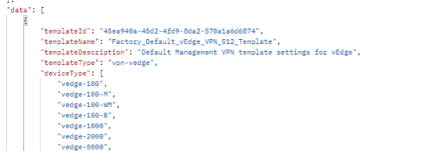

Extend the Enterprise WAN to the AWS Cloud: A first-hand deployment experience using Ansible
LTRXAR-2001
Speakers
Kyle Barnes – CX Architect, Praveen Poojary – CX Architect, Navin Suvarna – CX Architect
Learning Objectives
Upon completion of this lab, you will be able to understand the following:
• Viptela SD-WAN device vs feature templates
• Understand basic Ansible structure (playbooks, roles, variables, modules)
• Available Cisco Viptela Modules
• Ansible installation process
• Viptela SD-WAN API documentation
• Viptela Cloud OnRamp process
• Viptela Cloud OnRamp APIs
Cisco SD-WAN includes a useful tool for configuration management and network monitoring: vManage. Within the SD-WAN fabric, the vManage tool is responsible for handling the management plane, meaning that all the configurations can be performed from its graphical user interface (GUI). The vManage tool also offers a rich set of REST APIs, enabling you to automate specific workflows using your favorite tool, such as Postman, Python, Ansible, and others.
Introduction to key concepts
In the SD-WAN environment, you must still manage configuration of devices (vEdges) independently. This is because the SD-WAN fabric is widely distributed in the wide-area network (WAN). The vManage is a single point of configuration for the whole WAN fabric and uses a templates to simplify configuration management. In SD-WAN, you can configure every feature with a feature template. Templates ensure that the configuration is consistent across all the devices. Feature templates are grouped together into device templates that will be attached to the end devices.
What is a feature template?
Feature templates are the building blocks of complete configuration for a device. For each feature that you can enable on a device, Cisco vManage provides a template form that you fill out. The form allows you to set the values for all configurable parameters for that feature. Because device configurations vary for different device types and the different types of routers, feature templates are specific to the type of device.
How does this differ from device templates?
Device templates use feature templates! Device templates contain complete operational configuration for a device. You create device templates by consolidating individual feature templates. Each device template is specific for a type of device. For each device type, if multiple devices have the same configuration, you can use the same device template for them. For example, many of the routers in a network might have the same basic configuration, so you can configure them with the same templates. (You specify the differences in the templates using configuration variables, which are discussed below.) If the configurations for the same type of devices are different, you create separate device templates.
For the first scenario, we’ll be creating & using several Ansible playbooks. The purpose of this scenario is to familiarize yourself with the YAML playbook syntax and to better understand feature and device templates within an SD-WAN fabric.
One thing you’ll find throughout these subsequent tasks are a few Ansible playbooks that leverage vManage modules within Ansible found here: https://github.com/CiscoDevNet/python-viptela
What are modules?
“Ansible modules are units of code that can control system resources or execute system commands. Ansible provides a module library that you can execute directly on remote hosts or through playbooks.” In other words, modules are Python scripts that expect several inputs and can provide varying outputs.
Template Export (demonstration)
The first playbook we’ll create uses the ansible URI module to invoke an API call to vManage. The main API used here is the /dataservice/template/feature API.
The /dataservice/ part of the URL represents the API entry point. The remainder, /template/feature/, identifies the resource that you are going to manipulate: in this case, feature templates.
The methods that you are going to use to manipulate feature template are:
GET: Retrieves information from the system.
POST: Creates a new object (in this case, a new feature template).
PUT: Modifies an existing object.
DELETE: Deletes an existing object
The default output is a JSON formatted list of the various device templates, and the template ID associated with each individual feature template.
Note: The template ID will be used to uniquely identify the feature templates when we associate the feature templates with the device template at a later step.

The playbook then cycles through the json data and combines the feature template name & feature template ID into a key/value pair. These values are stored into a local variable called feature_template_db which is then printed.
- name: Export vManage Template
hosts: vmanage
gather_facts: no
connection: local
vars:
file: vmanage-templates.yml
#ALL YOUR POD/AWS SPECIFICS GO HERE#
vars_files:
- /home/dcloud/python-viptela/external_vars.yml
tasks:
- name: Get Cookies
ansible.builtin.uri:
url: https://{{ VMANAGE_IP }}/j_security_check
method: POST
body_format: form-urlencoded
validate_certs: False
body:
j_username: "{{ USERNAME }}"
j_password: "{{ PASSWORD }}"
register: login
- name: Output Cookie Info
ansible.builtin.debug:
var: login.cookies
- name: Get XSRF
ansible.builtin.uri:
url: https://{{ VMANAGE_IP }}/dataservice/client/token
method: GET
body_format: json
validate_certs: False
return_content: true
headers:
Cookie: "{{ login.cookies_string }}"
register: cookie_output
- name: Cookie Output
ansible.builtin.debug:
var: cookie_output.content
##################################################################################
- name: Get Feature Template
uri:
url: https://{{ VMANAGE_IP }}/dataservice/template/feature
method: GET
return_content: yes
validate_certs: no
headers:
Cookie: "{{ login.cookies_string }}"
X-XSRF-TOKEN: "{{ cookie_output.content }}"
Content-Type: "application/json"
register: template_list
- set_fact:
feature_template_db: "{{ feature_template_db|default({}) | combine( {item.templateName: item.templateId } ) }}"
no_log: True
with_items: "{{ template_list.json.data }}"
- debug:
msg: "{{ feature_template_db }}"
Copy/paste this into a new yml file called “10_Export_Feature_Templates.yml” – this playbook will only be run for demonstration purposes and is not used in the subsequent sections.

But wait? What is the mess above the “**” line in playbook 10? You’ll see this in differing flavours throughout this lab guide but the principal behind this is that before we can do anything using APIs we need to 1) authenticate (get a cookie) and 2) generate an XSRF token, using the cookie. Between scenario 1 and 2 you’ll see this done in varying ways-using a role and/or part of the Ansible playbook. The former option allows for cleaner, more concise Ansible playbook construction. Regardless, URI calls to the vManage APIs are how we perform most (all) of the steps throughout this lab guide.
This isn’t always how Ansible is used, though. Executing these plays locally on the Ansible control node is being performed with the “Connection: local” syntax as the top of the Playbook. Ansible typically works by connecting to your nodes and pushing out small programs—called modules—to these nodes. Modules are used to accomplish automation tasks in Ansible. These programs are written to be resource models of the desired state of the system. Ansible then executes these modules and removes them when finished. For automating network devices and other IT appliances where modules cannot be executed, Ansible will run on the control node (i.e. what we’re doing for all of our Ansible plays).
Template Export (template dump)
Copy and paste the following into a new yml file called “11_Export_Existing_Templates.yml”
The purpose of this playbook is to use the the vmanage_template_export API (which should be visible within the python-viptela>ansible>modules directory within the github link). The contents of this export are stored in the yml file ‘vmanage-templates.yml.’ We’ll leverage this ‘dump’ of feature templates in subsequent steps throughout Scenario 1. But how?
Before we get to that, execute the playbook and review the output of the vmanage-templates.yml file (created in the same directory as where the playbook is executed).
- name: Export vManage Template
hosts: vmanage
gather_facts: no
connection: local
vars:
file: vmanage-templates.yml
#ALL YOUR POD/AWS SPECIFICS GO HERE#
vars_files:
- /home/dcloud/python-viptela/external_vars.yml
tasks:
- name: Get Cookies
ansible.builtin.uri:
url: https://{{ VMANAGE_IP }}/j_security_check
method: POST
body_format: form-urlencoded
validate_certs: False
body:
j_username: "{{ USERNAME }}"
j_password: "{{ PASSWORD }}"
register: login
- name: Output Cookie Info
ansible.builtin.debug:
var: login.cookies
- name: Get XSRF
ansible.builtin.uri:
url: https://{{ VMANAGE_IP }}/dataservice/client/token
method: GET
body_format: json
validate_certs: False
return_content: true
headers:
Cookie: "{{ login.cookies_string }}"
register: cookie_output
- name: Cookie Output
ansible.builtin.debug:
var: cookie_output.content
##################################################################################
tasks:
- vmanage_template_export:
user: "{{ USERNAME }}"
host: "{{ VMANAGE_IP }}"
password: "{{ PASSWORD }}"
file: "{{ file }}"
Now that we have this information available to us, we can effectively reverse engineer the existing templates to create a new device template of our own.
How?
Before we answer how let’s cover two topics:
Roles: A role in Ansible is a set of tasks that accomplish a specific goal within a playbook. Roles let you automatically load related vars, files, tasks, handlers, and other Ansible artifacts based on a known file structure. After you group your content in roles, you can easily reuse them and share them with other users.
Jinja2: Jinja2 templates are simple template files that store variables that can change from time to time. When Playbooks are executed, these variables get replaced by actual values defined in Ansible Playbooks.
Here is a high-level flow as to how we’ll leverage Jinja2 templates & roles to develop our own device templates using Ansible.
1. Create roles via Ansible Galaxy: “ansible-galaxy init ~/python-viptela/roles/
4. Modify j2 components that we intend to templatize.
Note: We selected some things to demonstrate the key/value pair, but one could modify this with whatever factors you care to templatize.

5. Create subsequent playbooks that call the role where the J2 file resides and pass the specific variables.
6. The role will use the tasks main.yml file in a top-down format (render first, post second)

a. Render: Create the JSON payload from the variables that are passed when the role is used
b. Post: This may be a surprise, but post…performs a URI post using the rendered JSON file.
To summarize the high-level components within the roles directories:
Templates: This is where the actual j2 file lives.
Tasks: Where we render the JSON payload and post when the role is referenced.
Files: Latest JSON payload, with passed variables populated.
Note: An Ansible role has a defined directory structure with eight main standard directories. You must include at least one of these directories in each role. You can omit any directories the role does not use.